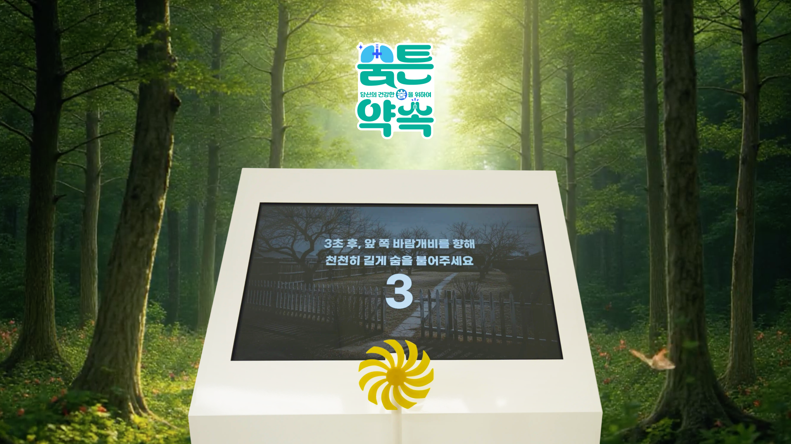
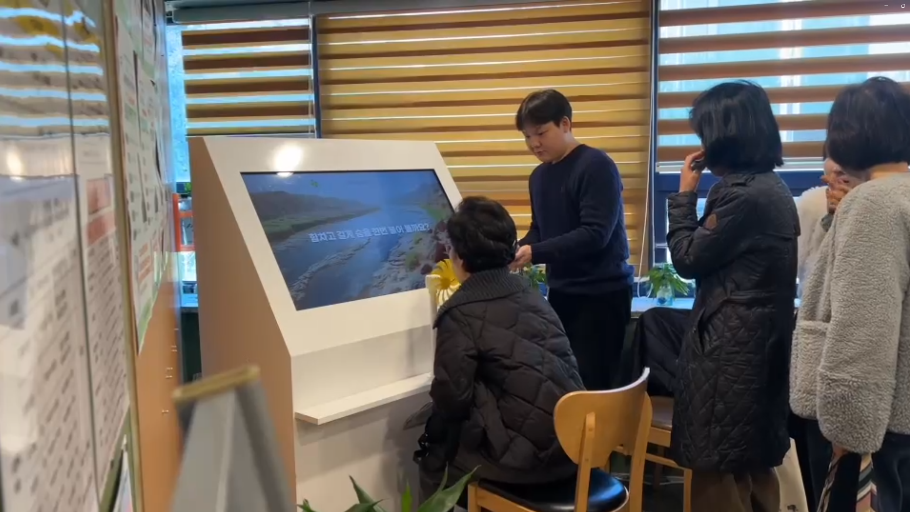
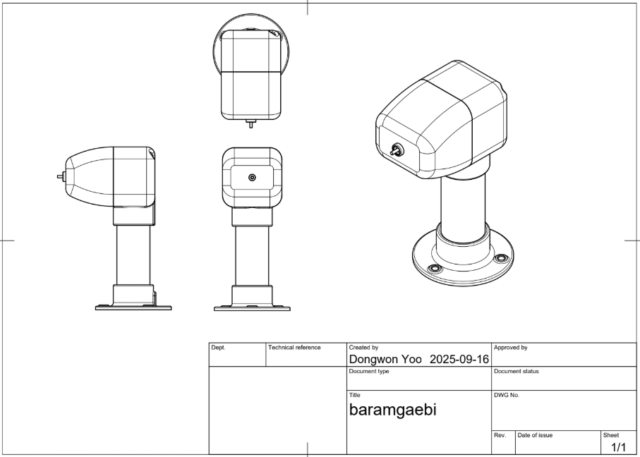
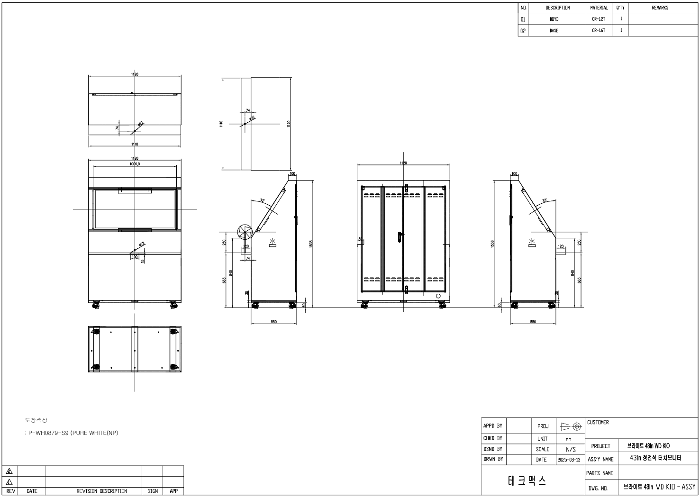
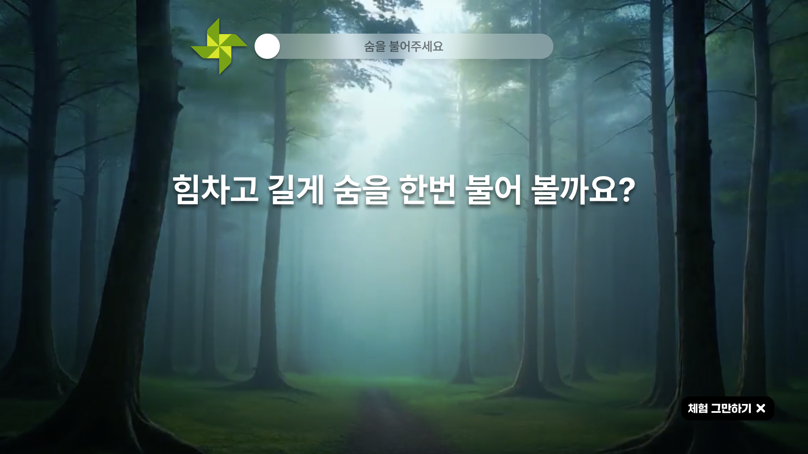
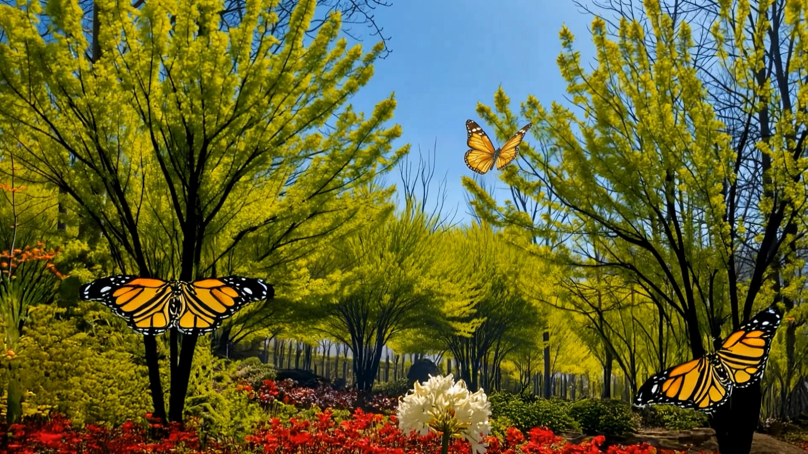
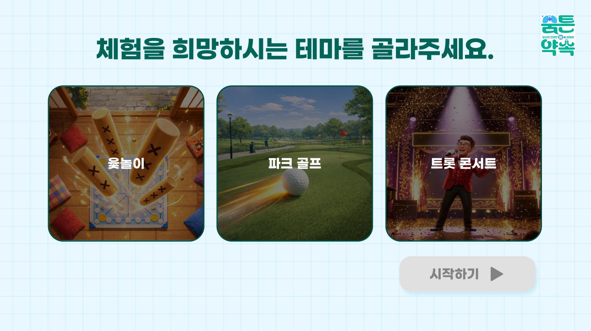
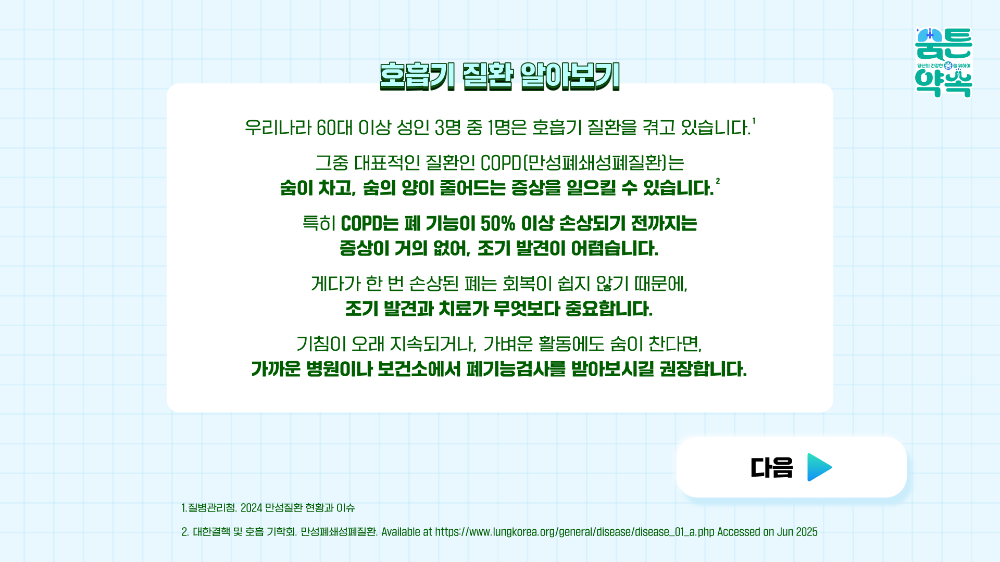
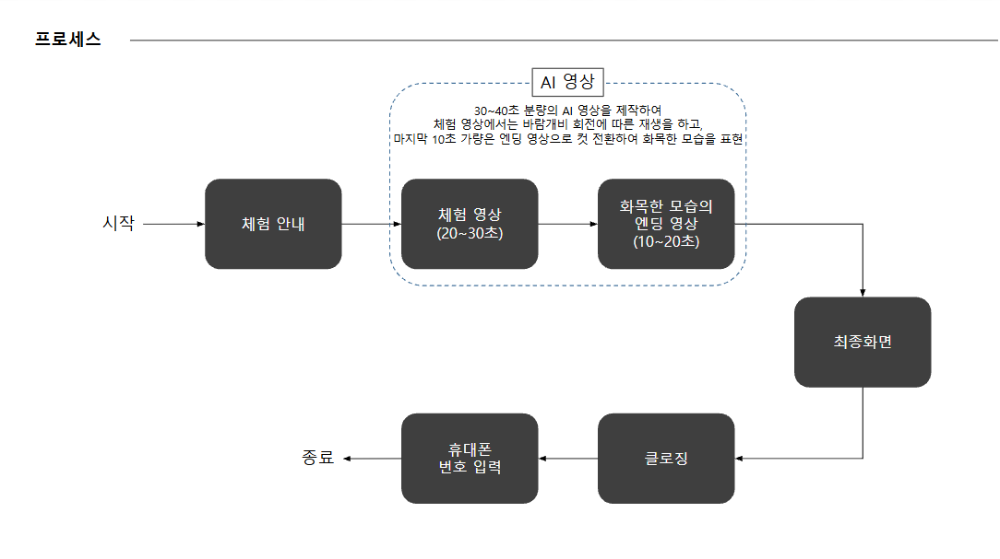
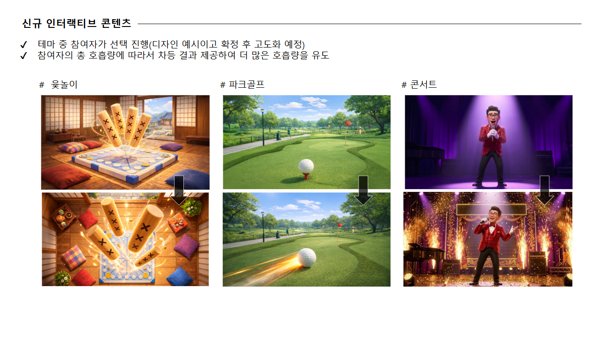

기존 교육은 강사의 설명을 듣는 방식이었습니다. 어르신이 호흡 행동과 화면 반응을 직접 경험한 뒤 질환 정보를 확인하는 교육 구조가 필요했습니다.
헬스케어 캠페인 · 인터랙티브
어르신이 바람개비를 부는 행동만으로 참여하는 디지털 호흡기 건강 체험을 만들었습니다.
기간2025.07 – 지속
프로젝트사노피 숨튼약속 노인 호흡기 건강 캠페인
담당체험 서비스 기획 · 인터랙션 로직 · 화면 기획 · 장치 제작·운영 조율
팀 구성기획 1 · 디자인 1 · 영상 1 · 개발 1
숨을 불면 회전이 감지되고 화면이 반응하는 구조로 참여 과정을 단순화했습니다. 체험 결과를 먼저 확인한 뒤 COPD와 폐기능 검사 정보를 안내했습니다.

핵심 과제
어르신이 디지털 기기 사용법을 배우지 않아도 호흡 행동만으로 참여해야 했습니다.
사노피 숨튼약속은 복지관 어르신이 바람개비에 숨을 불어넣으며 호흡기 건강의 중요성을 체감하는 사회공헌 캠페인입니다. 체험형 교육으로 바꾸더라도 복잡한 조작을 익혀야 하면 참여 장벽이 생깁니다. 짧은 안내만으로 시작하고 결과를 본 뒤 COPD와 폐기능 검사 정보를 확인해야 했습니다.

복지관에서 어르신과 함께 운영한 숨튼약속 체험형 교육
내 역할·판단
바람개비 회전 신호가 화면 반응과 건강 정보로 이어지는 조건을 정의했습니다.
호흡기 건강 캠페인 방향과 질환 정보 전달 기준 협의
바람개비 1회전당 신호값을 전달하는 센서·PCB 기판 및 하우징 제작
디스플레이 모듈을 포함한 키오스크 외형 및 조립 제작
- 참여 순서 판단호흡 행동·콘텐츠 결과·질환 정보·문자 안내의 순서 정의
- 입력값 정책PCB 회전 신호의 누적값과 단일값을 콘텐츠 조건으로 설계
- 화면·장치 조율화면 전환과 센서·PCB·키오스크 제작 요건 연결
- 현장 운영 기준복지관 반복 운영과 고령층 안내 및 스태프 대응 기준 정리
핵심 난관과 대응
바람개비의 물리적 회전을 USB 신호값으로 바꾸는 측정 장치가 필요했습니다.
어르신마다 다른 호흡량에서도 적은 입김으로 바람개비가 회전해야 함
참여자마다 호흡량이 달랐습니다. 한 가지 강도의 호흡을 기준으로 장치를 만들면 일부 어르신은 체험을 시작하기 어려웠습니다. 회전 시작점과 센서 감지 조건을 함께 맞춰야 했습니다.
1회전마다 USB 포트로 신호값 1을 전달하는 입력 규칙 정의
바람개비의 자석이 PCB 센서를 통과할 때 1회전을 감지하고 USB 포트로 신호값 1이 전달되도록 PCB 제작 협력사와 협의했습니다.
PCB 제작 협력사 섭외 후 센서·USB 연결과 보호 하우징 구현 조율
회전 감지 구조와 USB 신호 전달 조건을 제작 요건으로 정리했습니다. PCB 기판과 센서 위치를 조율하고 바람개비 모듈을 고정·보호하는 하우징까지 제작했습니다.
회전수를 화면 콘텐츠가 바로 읽는 디지털 입력으로 전환
화면은 USB로 전달된 신호값을 세어 누적형 콘텐츠와 1회 호흡 게임의 결과 조건으로 사용할 수 있게 됐습니다.

대응 근거 · 자석 통과를 감지해 USB 신호값으로 전달하는 센서·PCB 구조

대응 근거 · 센서·PCB와 바람개비 모듈의 위치 및 조립 사양을 정리한 하우징 도면
실행과 근거
실행과 상세
호흡 입력부터 콘텐츠 반응과 건강 정보 안내까지 하나의 체험 흐름으로 구현했습니다.
01 · 호흡 입력에서 건강 정보까지
바람개비 1회전마다 전달되는 PCB 신호를 콘텐츠 입력값으로 사용했습니다. 2025년에는 반복 호흡의 누적값에 따라 자연 풍경이 단계적으로 완성되도록 했습니다. 2026년에는 한 번의 호흡값으로 게임 결과가 결정되도록 입력 구조를 다시 설계했습니다.
01체험 목적과 바람개비 사용 방법 안내
02바람개비 1회전당 PCB 신호값 수신
032025년: 반복 호흡의 누적값에 따라 자연 풍경 단계 변화
042026년: 1회 호흡값에 따라 게임 결과 결정
05COPD 정보와 폐기능 검사 필요성 안내
06개인정보 동의 참여자에게 호흡기 질환 정보 문자 발송
02 · 핵심 서비스 화면

경험 01 · 호흡 입력
바람개비를 부는 행동만으로 디지털 체험 시작
버튼이나 복잡한 터치 없이 숨을 불면 회전 신호가 화면으로 전달되도록 구성했습니다. 회전 신호는 누적값 또는 단일값으로 구분해 콘텐츠 조건에 사용했습니다.

경험 02 · 2025 누적형
반복 호흡의 누적값으로 자연 풍경 완성
회전 신호가 쌓일수록 어두운 풍경에 빛·꽃·나비가 더해지도록 구성했습니다. 숫자 점수 대신 화면 변화로 결과를 이해하게 했습니다.

경험 03 · 2026 게임형
한 번의 호흡값으로 게임 결과 결정
2026년에는 반복 입력을 한 번으로 줄이고 회전값 구간에 따라 결과가 달라지도록 바꿨습니다. 어르신 선호를 반영해 윷놀이·파크골프·트로트 테마로 확장했습니다.

경험 04 · 건강 정보
체험 결과 뒤 COPD와 폐기능 검사 안내
오락으로 끝나지 않도록 체험 직후 COPD와 조기 발견의 중요성을 안내했습니다. 동의한 참여자에게는 상세 정보를 문자로 다시 전달했습니다.
03 · 핵심 실행 산출물

호흡 입력부터 화면 반응·질환 정보·문자 안내까지 연결한 서비스 흐름

반복 호흡형을 1회 호흡 게임으로 전환하고 세 가지 테마를 정의한 2026년 개편안
결과·영향
2025년 11월 3개 복지관에서 어르신 227명을 대상으로 시범 운영했습니다.
방배·양재·반포 3개 복지관 운영
방배노인종합복지관·양재노인종합복지관·반포종합사회복지관에서 체험형 교육을 운영했습니다.
프로그램 유익성 99%
건강 강좌와 체험을 결합한 파일럿 설문에서 프로그램이 유익하다는 응답을 확인했습니다.
COPD 등 호흡기 질환 신규 인지 97%
체험과 건강 정보 안내를 통해 이전에 몰랐던 호흡기 질환을 알게 됐다는 응답을 확인했습니다.
2026년 1회 호흡 게임으로 확장
2025년 반복 호흡형 자연 풍경 콘텐츠를 윷놀이·파크골프·트로트 게임으로 재구성했습니다.